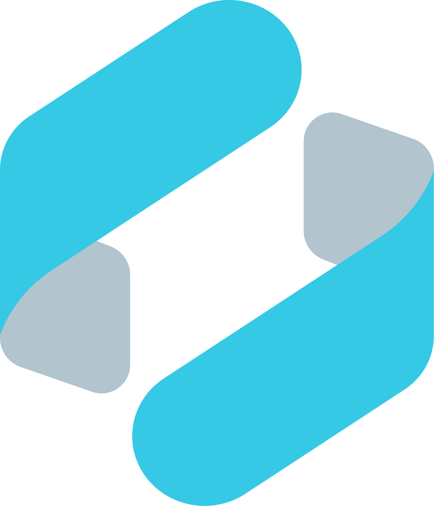

Career Change
転職支援
戦略・総合コンサルティングファームへの中途転職に特化。求人紹介だけでなく、書類作成から人物面接、ケース面接まで、入社まで一気通貫で支援します。
転職支援を見る
Servicesキャリア形成支援事業とコンサルティング事業の2つの事業を行っています。
SYMMETRY Labは、外資系戦略コンサルティングファームでM&Aや新規事業のプロジェクトを担当してきたメンバーが立ち上げた会社です。企業の戦略立案とM&Aの支援、業務システムの開発、コンサルティングファームを目指す方の転職支援を行っています。
Career
Career Change
コンサル転職を、確かな一歩に。戦略・総合コンサルティングファームへの中途転職に特化し、求人紹介だけでなく、書類作成から人物面接、ケース面接まで、入社まで一気通貫で支援します。
コンサルティングファームの情報収集を始めたものの、コンサル適性があるのか、どのファームなら可能性があるのか等、自分の現在地がわからない方
職務経歴書は自己流、ケース面接は書店の対策本を読んだだけ。「この準備で本当に受かるのか」を、選考を熟知した人へ確認したい方
平日は業務で手一杯。限られた時間で「何から・どの順で」準備すべきかを明確にし、最短距離で選考に臨みたい方
まずはWebから無料相談申込。現在の状況やご希望のファームなどをお聞かせください。
あなたの経験や希望を詳しくお聞かせいただき、転職の進め方・対策内容を確認します。
提携する人材紹介会社と連携し、あなたのキャリア設計に最適な求人を厳選してご紹介します。
職務経歴書や志望動機を、面接官に刺さる構成・表現へ磨き上げます。
志望動機を問う人物面接から、最大の関門であるケース面接まで、徹底的に対策します。
オファー内容の確認から条件交渉や入社前の準備まで、内定後も伴走します。
※求人紹介および応募手続、条件交渉は、提携する人材紹介会社と連携して担当します。
転職支援を無料で相談するCareer Programs
外資系戦略コンサル出身者が、あなた専用のカリキュラムで直接指導。フレームワーク暗記ではなく、思考プロセスそのものを鍛えます。
戦略コンサルタントの主要業務であるM&Aを題材に、ジョブ等の現場で求められる実務スキルを全3回で体系的に習得します。
Consulting
Works
Why SYMMETRY Lab
ご相談から実際の作業まで、外資系戦略コンサルティングファームでM&Aや新規事業のプロジェクトを担当してきたメンバーが行います。作業を外部に任せることはありません。
どの事業でも、作業に入る前に「何を決める必要があるのか」をお客様と確認します。システムの要件定義やケース面接の指導でも、同じ手順で進めています。
戦略を決めたあと、それを実行するための業務システムの開発まで同じチームで引き受けています。別々の会社に依頼する場合に比べて、方針と実装のずれが起きにくくなります。
Contact
戦略コンサルティング・ITコンサルティングに関するご相談は、こちらのフォームからお送りください。内容を確認のうえ、担当者よりご連絡します。小規模なご依頼や、一部の検討だけのご依頼もお受けしています。
講座やその他のお問い合わせはお問い合わせページからお送りください。
ご入力いただいたメールアドレスに受付確認のメールをお送りしました。担当者が内容を確認のうえ、ご連絡します。